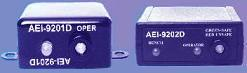
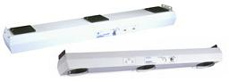
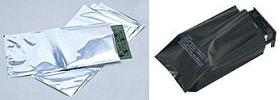

ESD Controls
The ESD
Association suggests focusing on just six basic principles for the
development and implementation of an effective
ESD control program,
namely, 1) ESD Immunity Design-in; 2) definition of the desired level of
ESD control; 3) identification of electrostatic protected areas (EPA's);
4) reduction, if not elimination, of static generation; 5) static
dissipation and neutralization; and 6) protection of products from ESD.
ESD Immunity Design-in
Prevention of
ESD-related problems starts with the ability to produce robust devices
that can withstand ESD events. This requires the proper determination of
the ESD sensitivity levels of new semiconductor devices prior to their
production release. This is best achieved by subjecting representative
samples of these devices to industry-standard ESD sensitivity tests
using an ESD sensitivity testing system (see example in Fig. 1).
There are several ESD sensitivity testing procedures available today,
each one depending on the ESD model being tested for. It is good
practice to test a device in terms of different ESD models. Devices that
exhibit inadequate immunity to ESD must be redesigned, if possible. This
is known as ESD immunity design-in.
|
|
|
Fig. 1.
An ESD/Latch-up Tester from KeyTek
|
Identification of EPA's
Aside from designing ESD
immunity into its products, a company must have a sound ESD control
program. To begin with, a company must identify all electrostatic
protected areas (EPA's) in its factory. An EPA is an area where ESD-sensitive
devices will be handled. Every EPA must be adequately protected by
ESD controls, the major ones of which are discussed below.
Static
Reduction/Dissipation/Neutralization
Over-all Grounding
The backbone
of static generation reduction and static dissipation is proper
grounding of everything a device touches. The primary means of grounding
ESD susceptible (ESDS) items (personnel, equipment, workstations, carts,
shelves, etc.) is to provide electrically conductive paths between these
items and a common ground.
Thus, every factory must have a
common
grounding point. Detailed
information on ESD grounding can be found in ESD Association standard
ESD-S6.1, Grounding-Recommended Practices.
Connecting everything to a
common ground point essentially
puts everything at the same potential (the potential
of the common grounding system). As long as everything is in equipotential balance, charging/discharging events will be prevented. It
is important to note though that insulators in an Electrostatic
Protected Area (EPA) cannot be grounded, so insulative materials must be
avoided in EPA's as much as possible.
ESD
Association Standard ANSI EOS/ESD 6.1-Grounding recommends a
two-step procedure for grounding equipment. The first step is to ground
all components of the work area (worksurfaces, people, equipment, etc.)
to the common ground, which is also referred to as the 'ESD common point
ground'. This ESD common point ground should be properly identified. ESD
Association standard EOS/ESD S8.1-1993 recommends its own symbol to
identify the common point ground.
The second
step is to connect the common point ground to the equipment ground or
the third wire (green) electrical ground connection. This is the
preferred ground connection because all electrical equipment at the
workstation is already connected to this ground. Connecting the ESD
control materials or equipment to the equipment ground brings all
components of the workstation to the same electrical potential.
If a
soldering iron used to repair an ESDS item were connected to the
electrical ground and the surface containing the ESDS item were
connected to an auxiliary ground, a difference in electrical potential
could exist between the iron and the ESDS item. This difference in
potential could cause damage to the item. Thus, any auxiliary
grounds (water pipe, building frame, ground stake) present and used at
the workstation must be bonded to the equipment ground to minimize
differences in potential between the two grounds.
Grounding of Personnel
People are
one of the primary generators of static electricity. The simple act of
walking around or repairing a board can generate several thousands of
volts on the human body. If not properly controlled or dissipated, the
accumulated static charge on a person can easily discharge onto a static
sensitive device. Such an event is known as human body model (HBM)
discharge.
Wrist
straps
are generally the primary means of controlling static charge build-up on
personnel. When properly worn and connected to ground, a wrist strap
keeps the person wearing it near ground potential. Because the person
and other grounded objects in the work area are at or near the same
potential, there can be no hazardous discharge between them. In
addition, static charges are safely dissipated from the person to ground
and do not accumulate.
|
|
|
Fig. 2.
Examples of wrist straps
|
Wrist straps
have two major components, the cuff that goes around the person's wrist
and the ground cord that connects the cuff to the common point ground.
Most wrist straps have a current limiting resistor molded into the
ground cord head on the end that connects to the cuff. The resistor most
commonly used is a one mega-ohm, 1/4 watt resistor with a working
voltage rating of 250 volts. This resistor would protect the person
wearing it from electric shock in case the point to which the wrist
strap is grounded accidentally gets 'live.'
Wrist straps
should be tested on a regular basis. Daily testing or continuous
monitoring is recommended.
|
 |
|
Fig. 3.
Examples of wrist strap monitors
|
A second
method of controlling electrostatic charge on personnel is with the use
of
conductive floors
in conjunction with
conductive
shoes
or
foot straps.
Any charge build-up on a person wearing conductive shoes will be
dissipated to the conductive floors through the sweat layer between each
foot and shoe. The conductive floors must be properly grounded to
the common ground system.
In addition
to dissipating charge, some floor materials (and floor finishes) also
reduce triboelectric charging. The use of floor materials is especially
appropriate in those areas where increased personnel mobility is
necessary. When used as the primary personnel grounding system,
the resistance to ground including the person, footwear and floor must
be the same as specified for wrist straps (< 35 x 10E6 ohms) or the
voltage accumulation on a person must be less than 100 volts.
The use of
ESD-protective clothing is another way to control charge build-up on a
person.
Fig. 4.
Examples of heel and sole grounders, also known as foot straps
Fig. 5.
Conductive shoes and slippers
Grounding of Moving Equipment
Moving
equipment such as carts, chairs, and lifters can likewise easily
generate static charges. Thus, these moving equipment also need to be
grounded to the common ground. One way of doing this is by providing
these equipment with conductive wheels, casters, or drag chains that
creates an electrical path between the equipment and the conductive
flooring. Thus, moving equipment must only be used over conductive
floors, since this is the only way they can be grounded with a drag
chain or conductive wheels or casters.
Grounding Work Stations and Work Surfaces
A work
station must be equipped with materials and equipment to limit ESD
events. The key ESD control elements used in most work stations are:
1) properly grounded
static
dissipative surfaces;
2) a means of grounding personnel (usually a wrist strap); 3)
appropriate signage and labeling; and 4) air ionizers if there are
insulative materials in the work station. As usual, the static
dissipative surfaces and personnel grounding ports must be properly
grounded to the common grounding system.
Static
protective work surfaces must have a resistance to ground of 106
to 109 ohms to provide a surface that is at the same
electrical potential as other ESD protective items in the workstation.
They also provide an electrical path to ground for the controlled
dissipation of any static build-up on materials that contact the
surface.
Fig. 6.
Examples of conductive mats and flooring
Grounding Production Equipment
Although
personnel-generated static is usually the primary source of ESD in many
environments, automated manufacturing and test equipment can also pose
an ESD problem. For example, a device may become charged from sliding
down an input track. If the device then contacts a grounded conductive
surface, a rapid discharge occurs from the device to the metal object.
Such a discharge is known as a Charged Device Model (CDM) ESD event.
Proper
grounding is the primary means of controlling static charge on
production equipment. Electrical equipment are required by the National
Electrical Code to be connected to the equipment ground (the green wire)
in order to carry fault currents. This ground connection can also serve
as a means to dissipate static charges on the equipment.
All electrical tools and equipment
used to process ESD sensitive hardware require the 3 prong grounded type
AC plug. Hand tools that are not electrically powered, i.e., pliers,
wire cutters, and tweezers, are usually grounded through the ESD-protective
work surface and the (grounded) person using the conductive tools.
Holding fixtures should be made of conductive or static dissipative
materials as much as possible. A separate ground wire may be required for
conductive fixtures not sitting on an ESD-protective work surface or handled by a
grounded person. Again, this wire must be connected to the common ground
system.
For those items that are composed of insulative
materials, the use of ionization or application of topical antistats may
be required to control the generation and accumulation of static charges.
Ionization
It is not possible to
eliminate all insulative materials
or isolated conductors that cannot be grounded from the production area. Thus, there
must be a way to control their ESD generation tendencies because these
items can not discharge to the common ground. Air ionizers serve this
purpose.
Air ionizers
neutralize the static charge on insulated and isolated objects by
charging the molecules of the surrounding air. Whatever static charge is
present on objects in the work environment will be neutralized by
attracting opposite polarity charges from the air. Because it uses only
the air that is already present in the work environment, air ionization
may be employed even in clean rooms where chemical sprays and some
static dissipative materials are not useable.
Air
ionization is just one component of a complete static control program.
It must not be a substitute for grounding or other methods.
Ionizers are used when it is not possible to properly ground everything,
or simply as a backup to other static control methods. In clean rooms, air
ionization may be one of the few methods of static control available.
The ionization
characteristics of air ionizers must be checked regularly, since an
improperly working air ionizer can emit a unbalanced stream of
positive and negative ions. If that happens, the air ionizer itself
would accelerate a static charge build-up, and be the root cause of a
serious ESD problem on the line.
Fig. 7.
Examples of bench-top ionizers

Fig. 8.
Examples of overhead ionizers
Protection of Products
from ESD
Packaging and Handling
ESD-sensitive
devices must never leave a plant unless they are properly protected from
ESD. Direct protection of devices from ESD can be provided by properly
selected packaging materials such as antistatic bags. Even intra- or
inter-factory transport of devices must be done with the use of ESD-protective
carriers.
ESD-protective packaging
materials must: 1) be dissipative; 2) exhibit low triboelectric charging
tendency; and 3) have the ability to shield their contents from
electrostatic fields.
The insides of these packaging materials have a low charging layer, while
their outer layers have a surface resistivity that's within the dissipative
range.
Dissipative
materials have a surface resistance greater than 104
but less than or equal to 1011 ohms when tested according to
EOS/ESD-S11.11 or a volume resistivity greater than 1.0 x 105
ohm-cm but less than or equal to 1.0 x 1012 ohm-cm when
tested according to the methods of EIA 541.
Electrostatic
shielding attenuates electrostatic fields on the surface of a package in
order to prevent potential differences from being developed inside the
package. Electrostatic shielding is provided by materials that have a
surface resistance equal to or less than 1.0 x 103 when
tested according to EOS/ESD-S11.11 or a volume resistivity of equal to
or less than 1.0 x 103 ohm-cm when tested according to the
methods of EIA 541. ANSI/ESD 11.31 is used to evaluate the shielding
characteristics of bags.

Fig. 9.
Examples of ESD-protective bags
Identification of ESD-sensitive Devices
The
final element of a good static control program is the use of appropriate
symbols to identify ESD-sensitive devices and assemblies, as well as
products intended to control ESD. The two most widely accepted symbols
for identifying ESDS parts or ESD control materials are defined in ESD
Association Standard ANSI ESD S8.1-1993 - ESD Awareness Symbols.
See Also:
What is ESD?;
ESD Models; ESDS Levels;
ESD Failures;
ESD Standards;
ESD Audit Checklist
Home
Copyright
©
2001-2005
www.EESemi.com.
All Rights Reserved.